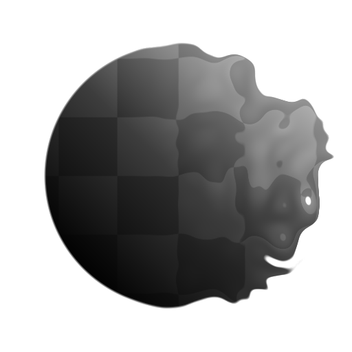
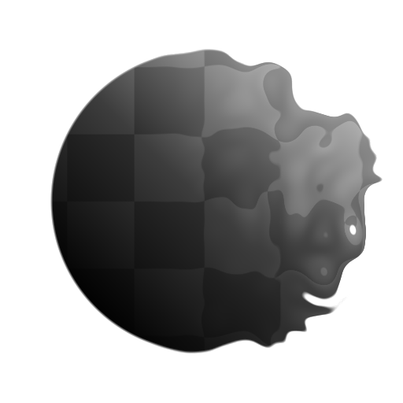

Non Uniform Directional Warp
 

Non Uniform Dir. Warp (Grayscale)
In: Filters/Effects
Complex
Description
Non-Uniform Direction Warp is an advanced version of Directional Warp that allows the intensity and direction of the warp to be driven by an image input. It Allows for much more control and can create very useful and interesting image distortion, in the same vain as Slope Blur.
It differs from Multi Directional Warp in that it allows control over the Angle through a custom Map input, whereas Multi Directional Warp only allows Direction to be controlled through parameters. This means that you can create advanced trailing and curving effects that are not possible otherwise.
Parameters
Inputs
- Input: Grayscale Input
Base map to which the warping will be applied. - Intensity Input: Grayscale Input
Mandatory mask map that drives the intensity of the warping effect, must be grayscale. - Warp Angle Input: Grayscale Input
Mandatory mask map that drives the Angle of the warping effect, must be grayscale.
Parameters
- Intensity: 0.0 - 20.0
Sets the intensity of the warp effect, how far to push pixels out. - Warp Angle: 0.0 - 1.0
Sets the Angle or direction in which to apply the Warp effect. - Warp Angle Input Multiplier: 0.0 - 1.0
Sets the effect of the Warp Angle Input Map. The Warp Angle Input map will the be used to interpolate from 0 to the value of this parameter. - Trail Mode: Min, Max, Average
Sets how the Trails are blended. - Trail Length: 0.0 - 1.0
Sets Length of Trails. - Trail Fade: 0.0 - 1.0
Sets how much each Trail should fade out - Trail Curve: -1.0 - 1.0
Only has effect if Trail Fade i not 0. Sets how the fading effect behaves.